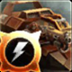
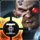
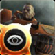
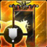
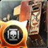
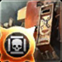
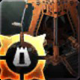

Death Watch Command - Land Speeder MarkLand Speeders apply a Debuff to their target. Increases Damage Taken and Reveals the target for a duration. When reaching Level 8, this Doctrine is unlocked to be equipped as an Army Doctrine." alt="ktic">
Deathwatch Presence - Death from AboveDeathwatch can be deployed anywhere you have vision. When the Deathwatch are deployed, your other Elites can be deployed around the Deathwatch." alt="ktip">
Jonah Orion's Command - Blind GrenadeScount grenades Blind and Silence the enemy for a duration. The duration increases as you Tier up. When reaching Level 8, this Doctrine is unlocked to be equipped as an Army Doctrine." alt="ljoc">
Jonah Orion's Presence - Standard StonewallWhen Jonah Orion is deployed, the Standard erects a magical barrier in a Circle around itself. Blocks movement and Absorbs shots that pass through it." alt="ljop">
Diomedes' Command - Final SlamInstead of dying, the Dreadnought activates Slam and Heals enough to avoid death. Only triggers once. When reaching Level 8, this Doctrine is unlocked to be equipped as an Army Doctrine." alt="chac">
Diomedes' Presence - RosariusWhen Diomedes is deployed, elites become temporarirly Invulnerable for a duration instead of dying. Has a long Cooldown between uses." alt="chap">
Gabriel Angelos' Command - Slam BarrierThe Dreadnought's Slam ability creates a temporary barrier. Absorbs shots and Reflects projectiles. When reaching Level 8, this Doctrine is unlocked to be equipped as an Army Doctrine." alt="gabc">
Gabriel Angelos' Presence - Inspiring DropWhen Gabriel is deployed, Drop Pods Heal in a Circle upon landing." alt="gabp">